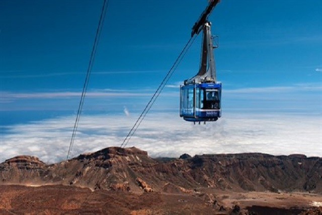
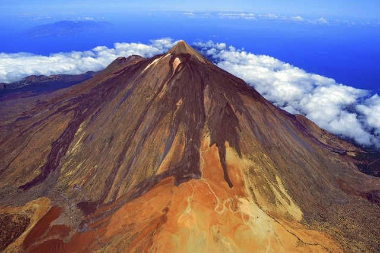
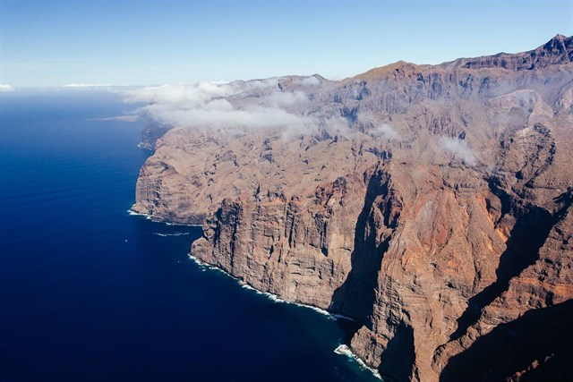
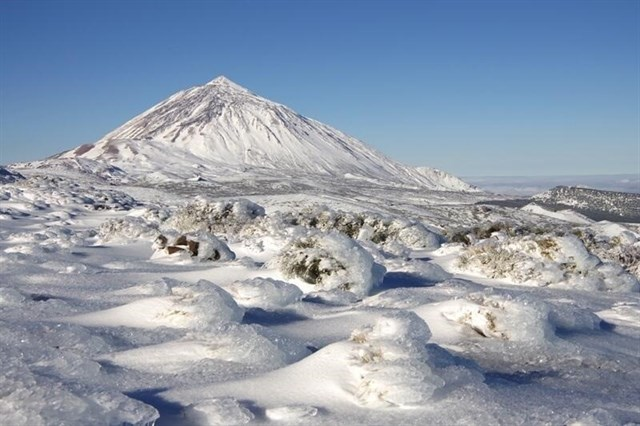
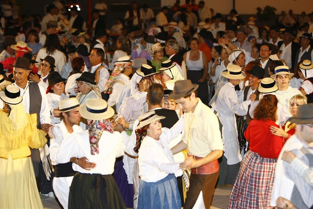

Noticias
Mantente al día de todo lo que ocurre en Tenerife
-

Los aeropuertos canarios registran más de 3,7 millones de pasajeros en marzo
Pulse para leer más -

El nivel de satisfacción de los usuarios del Teleférico del Teide supera su máximo histórico
Pulse para leer más -

El Teide bate su récord de visitantes en 2016, con más de cuatro millones
Pulse para leer más -

Lanzan una campaña para sensibilizar sobre la conservación de los acantilados de Los Gigantes
Pulse para leer más -

Los atractivos turísticos de Tenerife, protagonistas de programas de televisión en Dinamarca, Chequia y Bélgica
Pulse para leer más -

El lunes se abre el plazo de reserva de mesas para el Baile de Magos de Santa Cruz
Pulse para leer más